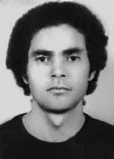

Edgar
de Aquino
Duarte
CIRCUNSTÂNCIAS DA MORTE
Edgar de Aquino Duarte foi preso em 13 de junho de 1971, em seu próprio apartamento, na Martins Fontes, 268, apto 807, São Paulo, por agentes do DOPS/SP, em operação conjunta com o DOI-CODI/SP. Esteve preso por mais de dois anos, incomunicável com sua família ou advogado, tendo sido continuamente torturado. Incialmente esteve preso no DOPS-SP, em cela solitária do “fundão”; em seguida foi para o DOI-CODI/SP; em agosto de 71 esteve no DOI-CODI/RJ, onde conversou com os presos Manoel Henrique Ferreira e Alex Polari de Alverga; em seguida esteve também no 7 o Regimento de Cavalaria, no Setor Militar Urbano em Brasília e no final de 72 até junho de 73, retornou ao DOPS-SP, onde novamente ficou preso em solitária. Diversos militantes presos conviveram com Edgar, tanto no DOI-CODI/SP quanto no DOPS/SP. As denúncias de José Genoíno Neto, Paulo de Tarso Vannuchi, Manuel Henrique Ferreira, Roberto Ribeiro Martins, Luis Vergatti e Carlos Vitor Alves Delamônica, feitas à época, e os depoimentos atuais de Ivan Akselrud Seixas, José Damião Trindade, André Tetsuo Ota, Pedro Rocha Filho, Arthur Scavone, Maria Amélia Teles e César Augusto Teles confirmam a prisão, torturas e morte de Edgar. Depoimento de José Genoíno Neto: […] ao seu lado, também numa cela individual e solitária, estava uma pessoa com o nome de Edgar [de] Aquino Duarte que falou para o interrogado que estava preso há dois anos, incomunicável. Que passou por presídios do Rio, Brasília, OBAN e DOPS e que nesses lugares sempre ficou em celas solitárias sem ficha e sem nenhuma identificação de seu nome verdadeiro. Depoimento de Roberto Ribeiro Martins: Quero ainda acrescentar, por um dever de justiça e, para comprovar que muitas são as arbitrariedades do Brasil de hoje, que tomei conhecimento que no DOPS, da existência de um rapaz de nome Edgar de Aquino, preso há dois anos sem culpa formada e incomunicável. Depoimento de Luis Vergatti: Outra questão é a situação da ilegalidade das prisões e mesmo da manutenção como o caso do interrogando que ficou 4 meses e meio na OBAN, como tem o Edgar de Aquino que está há mais de 2 anos preso incomunicável. Depoimento de Carlos Vitor Alves Delamônica: Que na fase do DOPS, como testemunho de descumprimento de leis, votadas pelo próprio regime vigente, lá tomei conhecimento e contato com o Edgar de Aquino Duarte, preso há dois anos em regime de absoluta incomunicabilidade. Durante o período em que esteve preso, Edgar indagava diretamente aos carcereiros e agentes da repressão sobre sua situação, ao que era respondido que seu caso estava à disposição do CIE. Maria Amélia Teles é testemunha de que ouviu, durante os “interrogatórios” de Edgar, que um de seus algozes bradou: “você mexeu com segredo de Estado; você tem que morrer”. Nos últimos dias, antes de desaparecer, em junho de 1973, Edgar era liberado com mais frequência da solitária, para tomar banho de sol. Desconfiado, confessou a Maria Amélia que tinha medo, pois achava que iriam matá-lo e que diriam que foi liberado e “justiçado” fora da prisão. Essa versão se confirmou quando o advogado de Maria Amélia, Virgílio Lopes Enei, ao impetrar habeas corpus em favor de Edgar, em julho de 73, obteve como resposta de Alcides Singillo que Edgar já havia sido liberado e que “talvez ele tenha medo de represálias dos elementos de esquerda e por isso tenha evitado contatos com a família ou talvez já tenha sido morto por esse pessoal”. Meses antes de ser preso, em 1971, Edgar encontrou-se com Cabo Anselmo e, atendendo ao pedido de Anselmo, que havia atuado com Edgar na revolta dos marinheiros, em 1964, acolheu-o em seu apartamento, sustentando-o com o salário de corretor da bolsa de valores. Em depoimento à Comissão Estadual da Verdade de São Paulo “Rubens Paiva”, Maria José Wilhensen narra que também conheceu Cabo Anselmo. Ela recorda da preocupação de Edgar, nos dias anteriores à sua prisão: Em outro momento, Edgar e Anselmo foram ver o jogo da seleção de Cuba. Por algum motivo meu marido e eu não pudemos ir. Ele foi com o Anselmo. No outro dia, ele falou: “Alguma coisa não saiu bem, acho que nós fomos seguidos, Anselmo entregou um pacote para a capitã da seleção de Cuba, acho que alguém perto viu e fomos seguidos, tem gente seguindo a gente”. Há controvérsias sobre Edgar ter sido preso sozinho ou junto com Cabo Anselmo, em seu apartamento. Há uma versão, confirmada por Cabo Anselmo em entrevista publicada no jornal O Globo, em 18/6/2000, de que Cabo Anselmo teria sido preso em 30/5/1971 por agentes do DOPS. Em depoimento de Altino Dantas Jr. para a Folha de São Paulo, em matéria de Henrique Lago, em 14/10/1979, Edgar havia lhe dito, quando ambos estavam presos no DOPS, que Cabo Anselmo havia sido preso com ele, em 2/6/1971, em seu apartamento. Em depoimento prestado à CNV, Ivan Seixas conta que estava preso no DOPS, em maio de 71, e que por volta do dia 30 de maio estava no “fundão”; nessa ocasião passou uma pessoa com capuz na cabeça e, depois, soube-se, por meio dos policiais da carceragem, que era Cabo Anselmo. Segundo Ivan: Um companheiro da minha cela (…) foi até a portinhola e perguntou: „Anselmo, é você que está aí? Não houve resposta, em seguida perguntou de novo e aí a pessoa que estava lá falou: sou eu, está tudo bem, não se preocupem‟. E ficamos com aquela informação que o Cabo Anselmo estava ali. Edgar acreditava que Anselmo havia sido preso e morto. Conforme relata Ivan Seixas, a partir de conversa com Edgar na prisão: Aí ele me falou que ele tinha sido preso, que o cara que morava com ele era o Cabo Anselmo, que ele achava que tinha sido preso também, porque ele não tinha notícia. Só que isso é dia 10, 12 de junho. Eu falei para ele que entrou um cara aqui com a cabeça coberta, a gente chamou e falou e ele confirmou que ele chamava Anselmo, que era o Cabo Anselmo. Ele falou: então mataram ele. É partir de Edgar que ocorre a confirmação da atuação de Anselmo como agente infiltrado. Em janeiro de 1973, no DOPS/SP, Edgar esteve com Jorge Barret Viedma, irmão de Soledad Barret Viedma, vítima do Massacre da Chácara São Bento, em Pernambuco. Em depoimento Jorge Barret conta que: Afinal eu disse, „Olha, toda essa história de lá de cima, é feita por um cara com toda a descrição do Cabo Anselmo que você me fala, do seu amigo. Seu amigo é policial. Então, tentamos que não fosse a mesma pessoa, mas não dava certo. Era a mesma pessoa. Hoje sabemos oficialmente que era a mesma pessoa nos dois casos. Mas Edgar de Aquino Duarte soube por mim e entrou numa crise profunda, batia a cabeça nas paredes, dava socos, chutes contra a porta e chorava e lamentava. Era uma coisa incrível para ele estar dois anos e meio defendendo a um herói e o cara era um policial. Que ele estava preso pra que ninguém soubesse que era, que esse homem era policial. A primeira denúncia pública do desaparecimento de Edgar Aquino Duarte foi feita em 1975 no documento conhecido como “Bagulhão”, ou Carta à OAB, documento que aponta o nome de 233 torturadores enviado ao então presidente do Conselho Federal da OAB, Caio Mario Pereira, editado e publicado posteriormente pela Comissão Estadual da Verdade de São Paulo “Rubens Paiva”. Nos anos subsequentes, documentos oficiais apontam uma série de informações desencontradas sobre o paradeiro de Edgar; além disso, há registro de que houve um intenso monitoramento dos familiares de Edgar, que participavam das reuniões do Comitê Brasileiro pela Anistia.
Edgar de Aquino Duarte was arrested on June 13, 1971, in his own apartment, at Martins Fontes, 268, apt 807, São Paulo, by DOPS/SP agents, in a joint operation with DOI-CODI/SP. He was imprisoned for more than two years, incommunicado with his family or lawyer, having been continuously tortured. Initially he was imprisoned at DOPS-SP, in a solitary cell in the “fundão”; then went to DOI-CODI/SP; in August 71 he was at DOI-CODI/RJ, where he spoke with prisoners Manoel Henrique Ferreira and Alex Polari de Alverga; then he was also in the 7th Cavalry Regiment, in the Urban Military Sector in Brasília and at the end of 72 until June 73, he returned to DOPS-SP, where he was once again held in solitary confinement. Several arrested militants lived with Edgar, both at DOI-CODI/SP and at DOPS/SP. The accusations of José Genoíno Neto, Paulo de Tarso Vannuchi, Manuel Henrique Ferreira, Roberto Ribeiro Martins, Luis Vergatti and Carlos Vitor Alves Delamônica, made at the time, and the current testimonies of Ivan Akselrud Seixas, José Damião Trindade, André Tetsuo Ota, Pedro Rocha Filho, Arthur Scavone, Maria Amélia Teles and César Augusto Teles confirm the arrest, torture and death of Edgar. Testimony from José Genoíno Neto: […] beside him, also in an individual and solitary cell, was a person named Edgar [de] Aquino Duarte who told the person being questioned that he had been imprisoned for two years, incommunicado. Who spent time in prisons in Rio, Brasília, OBAN and DOPS and who in these places always remained in solitary cells without a record and without any identification of his real name. Testimony from Roberto Ribeiro Martins: I also want to add, out of a duty of justice and, to prove that there are many arbitrary acts in Brazil today, that I became aware of the existence of a young man named Edgar de Aquino in the DOPS, imprisoned two years ago without any formal charge and incommunicado. Testimony from Luis Vergatti: Another issue is the situation of the illegality of prisons and even their maintenance, such as the case of the person being interrogated who spent 4 and a half months in OBAN, as with Edgar de Aquino who has been imprisoned incommunicado for more than 2 years. Testimony from Carlos Vitor Alves Delamônica: During the DOPS phase, as a testimony of non-compliance with laws, voted by the current regime itself, there I became aware and contacted with Edgar de Aquino Duarte, imprisoned for two years under an absolute incommunicado regime. During the period he was imprisoned, Edgar directly asked prison guards and repression agents about his situation, to which they were told that his case was at the disposal of the CIE. Maria Amélia Teles is a witness that she heard, during Edgar's “interrogations”, that one of his tormentors shouted: “you messed with state secrets; you have to die”. In the last days, before he disappeared, in June 1973, Edgar was released from solitary confinement more frequently, to sunbathe. Suspicious, he confessed to Maria Amélia that he was afraid, as he thought they were going to kill him and that they would say that he was released and “justified” outside of prison. This version was confirmed when Maria Amélia's lawyer, Virgílio Lopes Enei, when filing habeas corpus in favor of Edgar, in July 73, received a response from Alcides Singillo that Edgar had already been released and that “perhaps he is afraid of reprisals from left-wing elements and that is why he has avoided contact with his family or perhaps he has already been killed by these people”. Months before being arrested, in 1971, Edgar met with Corporal Anselmo and, responding to the request of Anselmo, who had worked with Edgar in the sailors' revolt in 1964, he welcomed him into his apartment, supporting him with his salary as a stock exchange broker. In a statement to the São Paulo State Truth Commission “Rubens Paiva”, Maria José Wilhensen says that she also met Cabo Anselmo. She remembers Edgar's concern in the days before his arrest: At another time, Edgar and Anselmo went to see the Cuban national team play. For some reason my husband and I couldn't go. He went with Anselmo. The other day, he said: “Something didn't go well, I think we were followed, Anselmo delivered a package to the captain of the Cuban team, I think someone nearby saw it and we were followed, there are people following us”. There is controversy over whether Edgar was arrested alone or together with Corporal Anselmo, in his apartment. There is a version, confirmed by Cabo Anselmo in an interview published in the newspaper O Globo, on 6/18/2000, that Cabo Anselmo was arrested on 5/30/1971 by DOPS agents. In a statement by Altino Dantas Jr. for Folha de São Paulo, in an article about Henrique Lago, on 10/14/1979, Edgar had told him, when they were both imprisoned at the DOPS, that Cabo Anselmo had been arrested with him, on 6/2/1971, in his apartment. In a statement given to the CNV, Ivan Seixas says that he was imprisoned in the DOPS, in May 71, and that around May 30th he was in the “fundão”; On that occasion, a person with a hood over their head passed by and, later, it was discovered, through the police at the prison, that it was Corporal Anselmo. According to Ivan: A companion from my cell (…) went to the door and asked: 'Anselmo, are you there? There was no answer, then he asked again and then the person who was there said: it's me, everything is fine, don't worry'. And we were left with the information that Corporal Anselmo was there. Edgar believed that Anselmo had been arrested and killed. As Ivan Seixas reports, based on a conversation with Edgar in prison: Then he told me that he had been arrested, that the guy who lived with him was Corporal Anselmo, who he thought had been arrested too, because he had no news. But it was on the 10th, June 12th. In January 1973, at DOPS/SP, Edgar was with Jorge Barret Viedma, brother of Soledad Barret Viedma, victim of the Chácara São Bento Massacre, in Pernambuco. In his statement, Jorge Barret says that: After all, I said, „Look, this whole story from up there is made by a guy with all the description of Corporal Anselmo that you tell me about, your friend. Your friend is a police officer. So, we tried to avoid it. The same person, but it didn't work. It was the same person. Today we officially know that it was the same person in both cases. But Edgar de Aquino Duarte found out from me and went into a deep crisis, banging his head against the walls, punching, kicking against the door and crying and lamenting. The first public report of Edgar Aquino's disappearance. Duarte was made in 1975 in the document known as “Bagulhão”, or Letter to the OAB, a document that names 233 torturers sent to the then president of the Federal Council of the OAB, Caio Mario Pereira, edited and published later by the São Paulo State Truth Commission “Rubens Paiva”. In subsequent years, official documents indicate a series of conflicting information about Edgar's whereabouts; of the meetings of the Brazilian Committee for Amnesty.
Edgar de Aquino Duarte fue detenido el 13 de junio de 1971, en su propio apartamento, en Martins Fontes, 268, apto 807, São Paulo, por agentes del DOPS/SP, en una operación conjunta con el DOI-CODI/SP. Estuvo encarcelado durante más de dos años, incomunicado con su familia o su abogado, y habiendo sido torturado continuamente. Inicialmente estuvo encarcelado en el DOPS-SP, en una celda de aislamiento en el “fundão”; luego pasó al DOI-CODI/SP; en agosto del 71 estuvo en el DOI-CODI/RJ, donde habló con los presos Manoel Henrique Ferreira y Alex Polari de Alverga; luego también estuvo en el 7º Regimiento de Caballería, en el Sector Militar Urbano de Brasilia y a finales del 72 y hasta el 73 de junio regresó al DOPS-SP, donde nuevamente fue recluido en régimen de aislamiento. Varios militantes detenidos vivían con Edgar, tanto en el DOI-CODI/SP como en el DOPS/SP. Las acusaciones de José Genoíno Neto, Paulo de Tarso Vannuchi, Manuel Henrique Ferreira, Roberto Ribeiro Martins, Luis Vergatti y Carlos Vitor Alves Delamônica, formuladas en su momento, y los testimonios actuales de Ivan Akselrud Seixas, José Damião Trindade, André Tetsuo Ota, Pedro Rocha Filho, Arthur Scavone, Maria Amélia Teles y César Augusto Teles confirman la detención, tortura y muerte de Édgar. Testimonio de José Genoíno Neto: […] a su lado, también en una celda individual y solitaria, se encontraba una persona llamada Edgar [de] Aquino Duarte, quien le dijo al interrogado que llevaba dos años preso, incomunicado. Que pasó tiempo en cárceles de Río, Brasilia, OBAN y DOPS y que en esos lugares permaneció siempre en celdas solitarias sin registro y sin identificación alguna de su verdadero nombre. Testimonio de Roberto Ribeiro Martins: También quiero agregar, por deber de justicia y para demostrar que hoy en Brasil hay muchas arbitrariedades, que tuve conocimiento de la existencia de un joven llamado Edgar de Aquino en el DOPS, encarcelado hace dos años sin cargo formal e incomunicado. Testimonio de Luis Vergatti: Otro tema es la situación de ilegalidad de las cárceles e incluso de su mantenimiento, como es el caso del interrogado que estuvo 4 meses y medio en la OBAN, al igual que Edgar de Aquino quien lleva más de 2 años preso incomunicado. Testimonio de Carlos Vitor Alves Delamônica: Durante la fase DOPS, como testimonio de incumplimiento de las leyes, votadas por el propio régimen actual, allí tomé conocimiento y contacté con Edgar de Aquino Duarte, preso durante dos años en régimen de incomunicación absoluta. Durante el tiempo que estuvo encarcelado, Edgar preguntó directamente a guardias penitenciarios y agentes represores sobre su situación, a lo que les dijeron que su caso estaba a disposición del CIE. María Amélia Teles es testigo de que escuchó, durante los “interrogatorios” de Edgar, que uno de sus verdugos gritaba: “te metiste con secretos de Estado; tienes que morir”. En los últimos días, antes de desaparecer, en junio de 1973, Edgar fue liberado con mayor frecuencia de su aislamiento para tomar el sol. Sospechoso, le confesó a María Amélia que tenía miedo, porque pensaba que lo iban a matar y que le dirían que estaba libre y “justificado” fuera de prisión. Esta versión fue confirmada cuando el abogado de Maria Amélia, Virgílio Lopes Enei, al presentar un habeas corpus a favor de Edgar, en julio de 73, recibió una respuesta de Alcides Singillo que Edgar ya había sido liberado y que “quizás tiene miedo de represalias de elementos de izquierda y por eso ha evitado el contacto con su familia o quizás ya fue asesinado por estas personas”. Meses antes de ser detenido, en 1971, Edgar se reunió con el cabo Anselmo y, atendiendo al pedido de Anselmo, quien había trabajado con Edgar en la revuelta de los marineros de 1964, lo recibió en su apartamento, manteniéndolo con su salario como corredor de bolsa. En declaración ante la Comisión de la Verdad del estado de São Paulo “Rubens Paiva”, María José Wilhensen dice que también conoció a Cabo Anselmo. Recuerda la preocupación de Edgar en los días previos a su arresto: En otra ocasión, Edgar y Anselmo fueron a ver jugar a la selección cubana. Por alguna razón mi marido y yo no pudimos ir. Se fue con Anselmo. El otro día dijo: “Algo no salió bien, creo que nos siguieron, Anselmo le entregó un paquete al capitán de la selección cubana, creo que alguien cerca lo vio y nos siguieron, hay gente siguiéndonos”. Existe controversia sobre si Edgar fue detenido solo o junto al cabo Anselmo, en su departamento. Existe una versión, confirmada por Cabo Anselmo en una entrevista publicada en el periódico O Globo, el 18/06/2000, que Cabo Anselmo fue detenido el 30/05/1971 por agentes del DOPS. En una declaración de Altino Dantas Jr. para Folha de São Paulo, en un artículo sobre Henrique Lago, del 14/10/1979, Edgar le había dicho, cuando ambos estaban presos en el DOPS, que Cabo Anselmo había sido detenido con él, el 2/6/1971, en su apartamento. En declaración dada a la CNV, Ivan Seixas dice que fue detenido en el DOPS, en mayo 71, y que alrededor del 30 de mayo se encontraba en el “fundão”; En esa ocasión pasó una persona con una capucha en la cabeza y, luego, se supo, a través de la policía del penal, que se trataba del cabo Anselmo. Según Iván: Un compañero de mi celda (…) fue hasta la puerta y preguntó: 'Anselmo, ¿estás ahí? No hubo respuesta, entonces volvió a preguntar y entonces la persona que estaba ahí dijo: soy yo, todo está bien, no te preocupes'. Y nos quedó la información de que allí estaba el cabo Anselmo. Edgar creía que Anselmo había sido arrestado y asesinado. Como relata Iván Seixas, basándose en una conversación con Edgar en prisión: Entonces me dijo que lo habían detenido, que el tipo que vivía con él era el cabo Anselmo, que pensaba que también lo habían detenido, porque no tenía noticias. Pero fue el día 10, 12 de junio. En enero de 1973, en el DOPS/SP, Edgar estaba con Jorge Barret Viedma, hermano de Soledad Barret Viedma, víctima de la masacre de Chácara São Bento, en Pernambuco. En su declaración, Jorge Barret dice que: Después de todo dije: "Mira, toda esta historia de allá arriba la hizo un tipo con toda la descripción del cabo Anselmo que usted me cuenta, su amigo. Su amigo es policía. Entonces tratamos de evitarlo. La misma persona, pero no funcionó. Era la misma persona. Hoy oficialmente sabemos que era la misma persona en ambos casos. Pero Edgar de Aquino Duarte se enteró por mí y entró en una crisis profunda, golpeando". con la cabeza contra las paredes, dando puñetazos, patadas contra la puerta y llorando y lamentándose. El primer informe público sobre la desaparición de Edgar Aquino se hizo en 1975 en el documento conocido como “Bagulhão”, o Carta a la OAB, documento que nombra a 233 torturadores enviado al entonces presidente del Consejo Federal de la OAB, Caio Mario Pereira, editado y publicado posteriormente por la Comisión de la Verdad del Estado de São Paulo “Rubens Paiva”. indican una serie de informaciones contradictorias sobre el paradero de Edgar de las reuniones del Comité Brasileño de Amnistía;